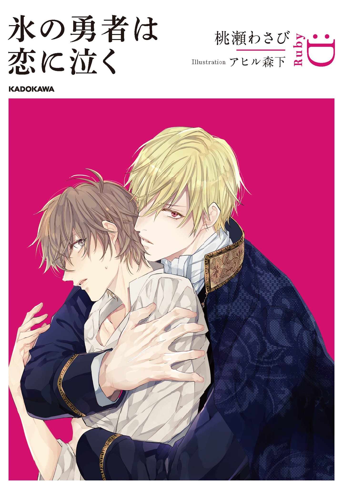

El hijo del tabernero, Ilya, tenía a menudo el mismo sueño. Un sueño en el que jugaba en el orfanato del pueblo con su amigo de la infancia, un niño con aspecto angelical. Un sueño en el que hacía jabón con aceitunas y sopa con las verduras sobrantes. Pero en cuanto Ilya vio la imagen del "Héroe de Hielo", se dio cuenta de que esos sueños no eran sueños en absoluto; eran recuerdos de su vida pasada. Y lo más importante, ¿ese "Héroe de Hielo", Riley, ya no era angelical?